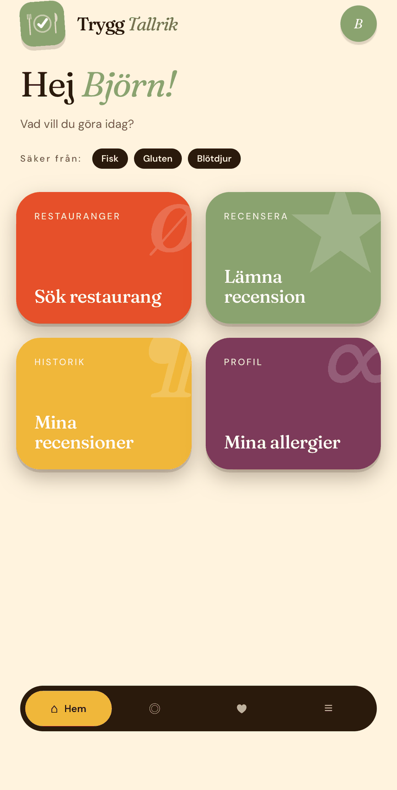
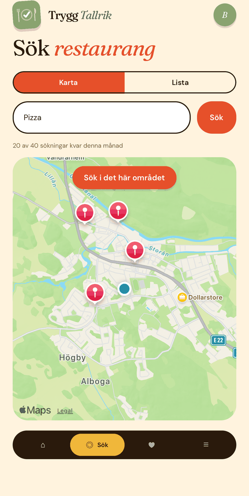
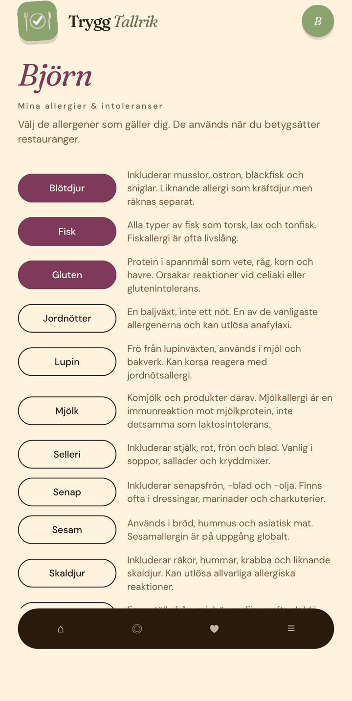
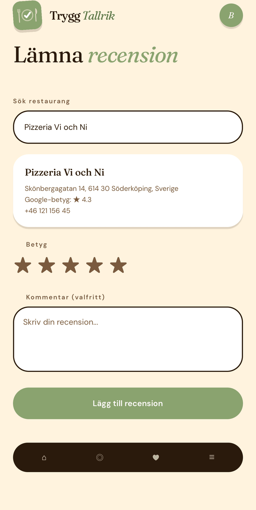
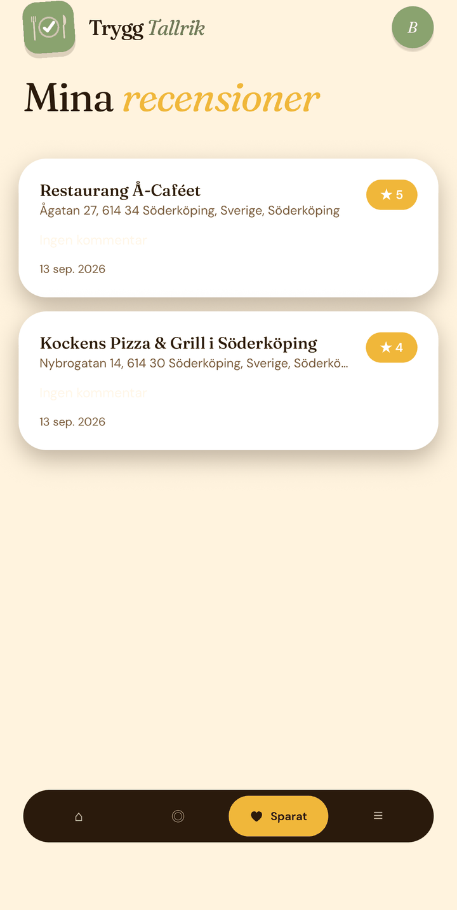

Sök nära dig
Hitta restauranger inom gångavstånd och se allergibetygen direkt i listan.
Trygg Tallrik hjälper dig hitta restauranger som tar dina allergier på allvar — ärligt rapporterat av restauranggästerna själv.





Hitta restauranger inom gångavstånd och se allergibetygen direkt i listan.
Betygen baseras bara på recensioner från gäster med samma allergier som du.
Ärliga omdömen skrivna av riktiga gäster — inte restaurangerna själva.
Välj vilka allergener som gäller dig. Appen tar hänsyn till din profil i alla sökningar.
Se personliga allergibetyg direkt på kartan, filtrerade för just dina behov.
Hjälp andra med samma allergi genom att lämna en ärlig recension efter din måltid.
Ladda ner appen gratis och sök bland tusentals restauranger nära dig redan idag.